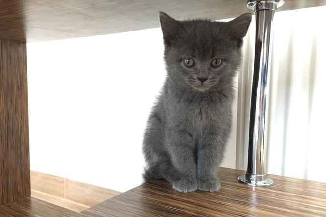

O plemeni a péče

Britská kočka
Plemeno známé od 19. století.
Má kulatou hlavu, hustou srst a robustní postavu.
Je klidná, společenská a hodí se do rodin.
Žije obvykle 12–20 let.
• Srst česat 1× týdně, při línání častěji.
• Má sklony k přibírání → kontrolovat krmné dávky.
• Má ráda klidné prostředí a stabilní režim.
• Pravidelné očkování + péče o zuby.

Bengálská kočka
Vznikla křížením domácí kočky s leopardí formou.
Má výraznou skvrnitou nebo mramorovanou kresbu srsti.
Je velmi aktivní, inteligentní a potřebuje dost podnětů.
Dožívá se zhruba 12–16 let.
• Nutná každodenní hra, interaktivní hračky, věže a škrabadla.
• Srst se udržuje snadno – občas přečesat.
• Vyžaduje prostor, výběhy nebo venčení na vodítku je velký plus.
• Strava bohatá na bílkoviny, hlídat váhu.
Birma
Stav: Dostupný
Historicky má původ spojovaný s Asií a chová se hlavně v Evropě.
Má hedvábnou středně dlouhou srst a bílé tlapky.
Je velmi přítulná, jemná, mazlivá.
Dožívá se běžně 12–16 let.
• Česání 2–3× týdně, jinak se zacuchává.
• Ráda jí, takže hlídat váhu.
• Vyžaduje lidskou pozornost, ale nepotřebuje extrémní aktivitu.
• Pravidelně kontrolovat oči a uši.
Perská kočka
Původ sahá do Persie (dnešní Írán).
Má dlouhou, velmi hustou srst.
Často má zploštělý obličej v moderních liniích.
Dožívá se přibližně 10–15 let.
• Denní česání — snadno se tvoří uzlíky.
• Doporučují se i koupele a pravidelný grooming.
• Ploché obličeje mohou mít problémy s dýcháním → kontrola u veterináře.
• Čistit oči, nos a držet srst bez zacuchání.
.jpg)
Americká kadeřavá kočka
Plemeno pochází z USA.
Typické jsou zahnuté uši dozadu.
Mívá krátkou i dlouhou srst, různé barevné varianty.
Dožívá se 12–16 let.
• Uši jsou citlivé → pravidelně kontrolovat a jemně čistit.
• Česat podle typu srsti (1–3× týdně).
• Vyžaduje společnost, interaktivní hru a pozornost lidí.
• Standardní veterinární péče a očkování.